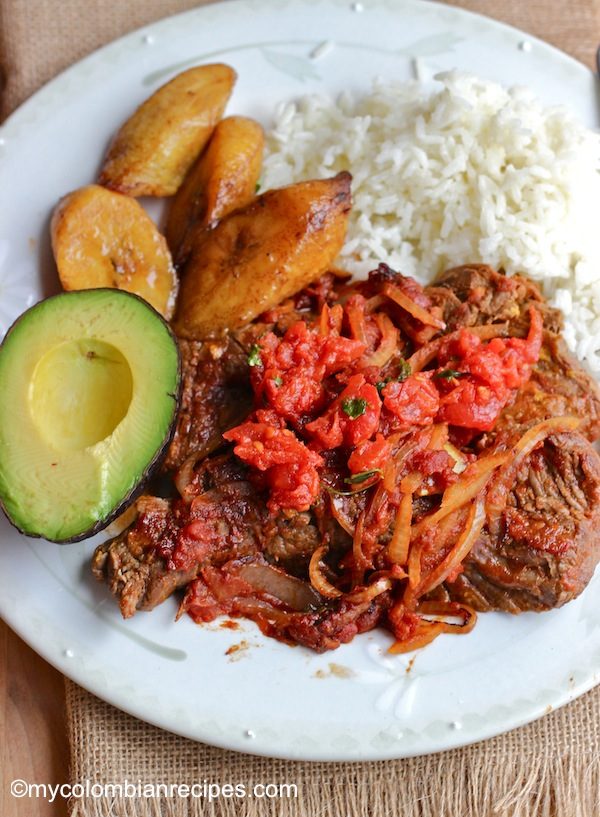

Style Crole Steak

Desciption
This is one of those recipes that many Colombians grew up eating at least once a week. Criolla Steak is one of my favorite dishes because I love the flavor and texture of the Criolla sauce.
Colombian Creole Steak is a very simple and quick recipe to make and full of flavor. Serve with white rice and avocado.
Ingredients
- 2 pounds skirt steak or fillet, cut into 4 equal portions
- 1 ½ tablespoons vegetable oil
- 2 cloves of garlic, minced
- ½ tablespoon mustard
- 1 tablespoon ground cumin
- Salt and black pepper
- 2 tablespoons chopped fresh cilantro
- 1 cup chopped long onion
- 2 chopped tomatoes
Steps
- Place the fillets between plastic wrap, pound until each piece of meat is very thin.
- Place the pounded fillets in a resealable plastic bag. Add the mustard, cumin, garlic, coriander, salt and pepper.
- Refrigerate for 1 hour or overnight. Make sure the fillets are evenly coated.
- In a large skillet, heat oil over medium heat. Place the fillets in the pan and cook 3 minutes on each side. Add the tomato, cover and cook for 7 more minutes.